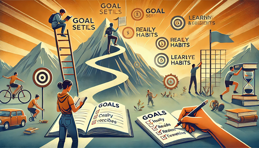

Estrés y Ansiedad

-
Estrés Laboral
- Cómo equilibrar la vida laboral y personal.
- Causas comunes del estrés en el trabajo.
- Agotamiento profesional y cómo prevenirlo.
-
Ansiedad Social
- Qué es y cómo afecta las relaciones.
- Superar el temor a eventos sociales o hablar en público.
-
Estrés y ansiedad durante el embarazo y la maternidad
- Estrés prenatal y cómo manejarlo.
- Técnicas de manejo de la ansiedad relacionada con la crianza.
- Apoyo emocional durante la maternidad/paternidad.
Autodisciplina
La autodisciplina es fundamental para crecer como personas porque nos permite establecer y alcanzar metas a largo plazo, manteniendo el enfoque y la constancia, incluso cuando surgen dificultades o distracciones. Al practicarla, desarrollamos la capacidad de tomar decisiones conscientes en lugar de actuar por impulsos, lo que fortalece nuestro autocontrol, responsabilidad y resiliencia.
Hábitos Negativos
| Hábito | Consecuencias |
|---|---|
| Sedentarismo | Problemas cardiovasculares, obesidad, diabetes tipo 2 |
| Mala alimentación | Aumento de peso, problemas digestivos, falta de energía |
| Fumar | Enfermedades respiratorias, cáncer, envejecimiento prematuro |
| Uso excesivo de dispositivos electrónicos | Problemas de vista, trastornos del sueño, aislamiento social |
Bienestar Personal
El bienestar personal es un concepto integral que incluye el equilibrio entre cuerpo, mente, emociones y relaciones.